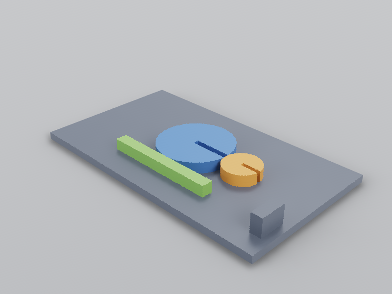

gear_train
Gears and a rack coupled to one driver: posing the drive gear turns the idler the other way at the ratio of their radii and slides the rack by the pitch circle. A looping `run` animation drives it. Run: cad run examples/gear_train.ts, then drag "drive" in the viewer, or cad model ranges <id> to see the rack stop at its end block.

Source
Run it with cad run examples/gear_train.ts.
// Gears and a rack coupled to one driver: posing the drive gear turns the idler the other way at
// the ratio of their radii and slides the rack by the pitch circle. A looping `run` animation
// drives it. Run: cad run examples/gear_train.ts, then drag "drive" in the viewer, or
// cad model ranges <id> to see the rack stop at its end block.
import { animation, assembly, box, couple, cylinder, model, prismatic, revolute } from "@cad/sdk";
export const gearTrain = model("gear_train", () => {
const r1 = 20, r2 = 10;
const plate = box(140, 80, 4, { align: ["center", "center", "max"] }).label("plate", { color: "#555b66" });
const drive = cylinder(r1, 6, { align: ["center", "center", "min"] })
.cut(box(r1, 3, 6, { align: ["min", "center", "min"] })) // a notch to see it turn
.label("drive", { color: "#4a6fa5" });
const idler = cylinder(r2, 6, { align: ["center", "center", "min"] })
.cut(box(r2, 2, 6, { align: ["min", "center", "min"] }))
.translate(r1 + r2, 0, 0)
.label("idler", { color: "#c98b4a" });
// The rack runs along +X under the drive gear's pitch circle (y = -r1).
const rack = box(60, 6, 6, { align: ["center", "max", "min"] }).translate(0, -r1, 0).label("rack", { color: "#7aa35a" });
const stop = box(6, 14, 10, { align: ["min", "center", "min"] }).translate(60, -r1 - 3, 0).label("stop", { color: "#555b66" });
const mmPerDeg = (2 * Math.PI * r1) / 360;
return assembly("gear_train", [plate, drive, idler, rack, stop], {
joints: [
// The rack meets its stop 30 mm along: about -86 degrees of drive (`cad model ranges`).
revolute("drive", { parent: plate, child: drive, axis: "Z", limits: [-80, 60] }),
revolute("idler", { parent: plate, child: idler, axis: { origin: [r1 + r2, 0, 0], dir: "Z" } }),
prismatic("rack", { parent: plate, child: rack, axis: "X" }),
],
couplings: [
couple("drive", "idler", -r1 / r2), // meshing gears turn opposite ways
couple("drive", "rack", -mmPerDeg), // the rack under the gear moves against its turn
],
poses: { left: { drive: 60 }, right: { drive: -80 } },
animations: [animation("run", 4, { loop: true }).pose({ 0: { drive: 0 }, 1: "left", 3: "right", 4: { drive: 0 } })],
});
});
if (import.meta.main) await gearTrain();